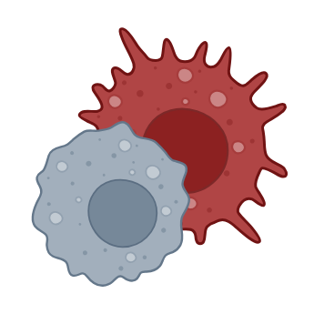

This section includes other types of apps.
Related to skeletal muscle or not. Potentially of interest!
Related to skeletal muscle or not. Potentially of interest!
Scientific Niche
This app visualizes how a specific research topic intersects with broader scientific fields.

Polarized Macrophages
Curated transcriptome of human and mouse macrophages polarized into M1/M2 phenotypes.